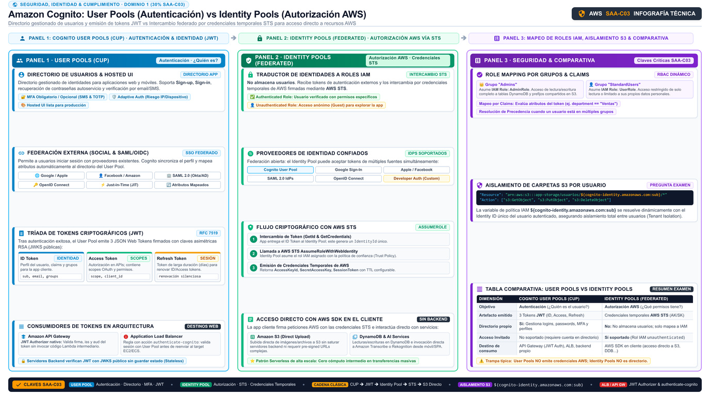

Cognito Amazon Cognito
Identidad para tus usuarios finales: user pools para autenticar (JWT) e identity pools para darles credenciales temporales de AWS. El examen los mezcla a propósito.
IAM resuelve la identidad de tu equipo y de tus workloads. Pero cuando una aplicación web o móvil tiene miles o millones de usuarios finales, no vas a crear un usuario IAM por cada uno. Amazon Cognito es el mostrador de recepción para ese público: un directorio de usuarios gestionado que hace sign-up y sign-in, verifica emails y teléfonos, aplica políticas de contraseñas y MFA, y además puede federar identidades que tus usuarios ya tienen en Google, Facebook, Apple, Login with Amazon o en el IdP corporativo (SAML/OIDC).
La clave del examen es que Cognito son en realidad dos servicios con dos verbos distintos. El user pool hace autenticación: responde "quién es este usuario" y entrega JWT que tus APIs aceptan como prueba de identidad. El identity pool hace autorización de AWS: intercambia esa identidad (o incluso un usuario anónimo) por credenciales temporales de AWS vía STS, para que el cliente toque S3 o DynamoDB directamente. Autenticación por un lado, permisos de AWS por el otro — y nunca al revés.
User pools: el directorio que autentica
Un user pool es el directorio de usuarios de tu aplicación. Se encarga del registro (con códigos de verificación por email o SMS), del login (contra su directorio o vía IdPs federados), de la recuperación de contraseña, de MFA y de adaptive authentication (riesgo evaluado por dispositivo y ubicación). Ofrece una hosted UI — páginas de login listas para usar y personalizables — y SDKs para web, iOS y Android, de modo que no implementas el flujo de autenticación desde cero.
Tras el login, el user pool devuelve tres JWT: el ID token (atributos e identidad del usuario), el access token (autorización contra endpoints, con scopes) y el refresh token (para renovar los otros sin volver a pedir contraseña). Tus backend validan esos tokens: API Gateway acepta un user pool como JWT authorizer nativo, y un ALB puede autenticar con la acción authenticate-cognito antes de reenviar al target. El user pool se convierte así en la puerta de entrada estándar "app → API Gateway/ALB → backend" sin credenciales AWS en el cliente.
Identity pools: credenciales temporales para tus usuarios
Un identity pool no guarda usuarios: traduce identidades a permisos. Tú registras en el identity pool los IdP en los que confías (un user pool tuyo, un IdP social o SAML, o usuarios no autenticados) y le asignas a cada origen un IAM role. Cuando un usuario llega, el identity pool llama a STS y le entrega temporary credentials firmadas con ese role. La app puede entonces firmar peticiones directas a servicios AWS — subir a S3, leer DynamoDB, invocar Amazon Transcribe — sin que exista ninguna clave permanente en el dispositivo.
El patrón soporta además el guest access (rol unauthenticated para usuarios sin login, p. ej. navegar el catálogo público) y el role mapping por atributos, para dar permisos distintos según el rol del usuario. Recuerda la mecánica de seguridad: como siempre en AWS, los permisos reales los define la política IAM del role asumido; el identity pool solo decide qué role toca a quién. La contrapartida de diseño es que cualquier permiso que concedas vive en el cliente, así que el patrón se reserva para acceso controlado a recursos concretos; la arquitectura más segura por defecto sigue siendo user pool + API Gateway + backend.
| Aspecto | User pool | Identity pool |
|---|---|---|
| Verbo | Autenticación (quién es) | Autorización AWS (qué puede tocar) |
| Objeto | Directorio de usuarios con políticas, MFA, verificación | Origen de identidades mapeado a IAM roles |
| Qué entrega | JWT: ID, access y refresh tokens | Credenciales temporales de AWS vía STS |
| Quién consume el resultado | Tu app, API Gateway, ALB, backend | AWS SDK en el cliente (S3, DynamoDB…) |
| Usuario anónimo | No aplica | Sí: rol unauthenticated |
| Señal en el enunciado | "sign-up / sign-in", "JWT", "MFA for app users" | "temporary AWS credentials", "direct access to S3 from mobile" |

sub, email), el Access Token con scopes OAuth y grupos para autorización en APIs, y el Refresh Token para renovación silenciosa de sesión; estos tokens son validados de forma nativa y sin servidor por Amazon API Gateway (JWT Authorizer nativo) o Application Load Balancer (regla con acción authenticate-cognito). Panel 2 (Cognito Identity Pools - Autorización AWS): Actúa como un traductor de identidades externas a permisos temporales de IAM sin almacenar credenciales de usuario; confía en múltiples IdPs (Cognito User Pools, Google, Apple, SAML u OIDC) y soporta acceso anónimo con el rol unauthenticated (Guest access); mediante las APIs GetId y GetCredentialsForIdentity invoca internamente sts:AssumeRoleWithWebIdentity para emitir credenciales temporales de AWS (Access Key, Secret Key y Session Token); esto permite a los SDKs de AWS en clientes móviles y Single Page Applications interactuar directamente con Amazon S3 (subida y descarga de objetos masivos), Amazon DynamoDB o servicios de IA sin sobrecargar ni pagar por servidores backend intermediarios. Panel 3 (Mapeo de Roles, Seguridad Multi-Tenant y Comparativa Clave): Soporta Role Mapping inteligente por grupos (el grupo 'Admins' asume un rol IAM con privilegios elevados; 'Users' asume un rol restringido) o reglas condicionales de claims; implementa aislamiento multi-tenant en S3 mediante la variable de política IAM ${cognito-identity.amazonaws.com:sub} para confinar a cada usuario estrictamente a su carpeta personal; y resume la distinción esencial para el examen: User Pools responde a '¿quién es el usuario?' entregando JWTs, mientras que Identity Pools responde a '¿qué recursos de AWS puede manipular?' entregando credenciales STS temporales firmadas.Federación: usuarios que ya tienen identidad en otra parte
Cognito brilla cuando tus usuarios ya tienen una identidad. El user pool puede federar social IdPs (Google, Facebook, Apple, Login with Amazon) y IdPs empresariales vía OIDC o SAML 2.0, de modo que el usuario entra con su cuenta existente y Cognito crea/mantiene el perfil correspondiente en el directorio (con atributos mapeados). Para empleados corporativos, la combinación moderna es IdP corporativo → IAM Identity Center / SAML → roles IAM; para clientes finales de tu producto, es IdP federado → user pool.
o IdP social o SAML"| STS["AWS STS"] STS -->|"credenciales
temporales"| ROL["IAM role mapeado"] ROL --> S3["S3 o DynamoDB
desde el SDK cliente"] G["Usuario invitado"] -->|"rol
unauthenticated"| IP classDef navy fill:#EFF6FF,stroke:#3B82F6,stroke-width:2px,color:#1E293B classDef green fill:#F0FDF4,stroke:#10B981,stroke-width:2px,color:#1E293B classDef amber fill:#FFF7ED,stroke:#F59E0B,stroke-width:2px,color:#1E293B class U,G navy class IP,STS green class ROL,S3 amber
Cómo cae en el examen: señales y trampas
| Si el enunciado dice… | La respuesta apunta a… |
|---|---|
| "mobile app with millions of users, sign-up and sign-in" | Cognito user pool (no IAM, no Directory Service) |
| "authenticate users before reaching the ALB / API Gateway" | User pool + authenticate-cognito en ALB o JWT authorizer en API Gateway |
| "give authenticated users temporary AWS credentials to upload to S3" | Cognito identity pool con IAM role mapeado |
| "users sign in with Google / corporate SAML IdP" | Federación en el user pool (social u OIDC/SAML) |
| "guest users browse the app without an account" | Identity pool con rol unauthenticated |
| "employees need console / CLI access with corporate identities" | Distractor de Cognito: IAM Identity Center o federación a IAM |
- Cognito = identidad para usuarios finales de web/móvil; IAM = identidad para tu equipo y tus workloads.
- User pool: autenticación — sign-up/sign-in, MFA, verificación, hosted UI.
- El user pool entrega JWT (ID, access, refresh); API Gateway y ALB los validan nativamente.
- Identity pool: autorización — mapea identidades (incluidas anónimas) a IAM roles.
- El identity pool entrega credenciales temporales vía STS; los permisos los fija el IAM role.
- Federación: social (Google, Facebook, Apple, Amazon) y corporativa (SAML/OIDC) en el user pool.
- Empleados corporativos → IAM Identity Center; clientes del producto → user pool.
- SEC-05 Amazon Cognito — What is (user pools, identity pools) · docs.aws.amazon.com/cognito/latest/userguide/what-is-amazon-cognito.html